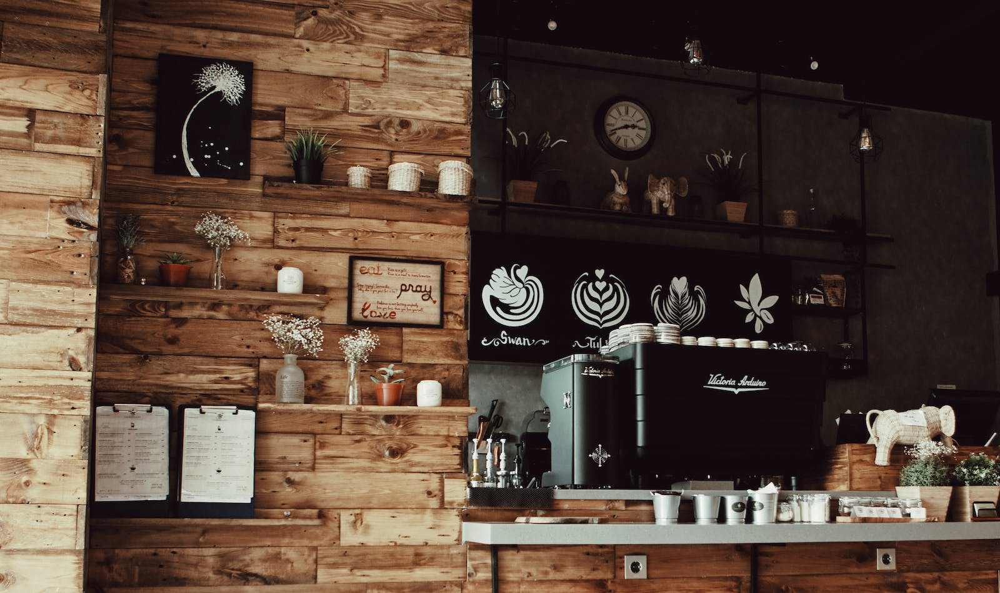

A coffeehouse, coffee shop, or café is an establishment that primarily serves coffee of various types, notably espresso, latte, and cappuccino. Some coffeehouses may serve cold drinks, such as iced coffee and iced tea, as well as other non-caffeinated beverages. In continental Europe, cafés serve alcoholic drinks. A coffeehouse may also serve food, such as light snacks, sandwiches, muffins, fruit, or pastries. Coffeehouses range from owner-operated small businesses to large multinational corporations. Some coffeehouse chains operate on a franchise business model, with numerous branches across various countries around the world.
While café may refer to a coffeehouse, the term "café" generally refers to a diner, British café (colloquially called a "caff"), "greasy spoon" (a small and inexpensive restaurant), transport café, teahouse or tea room, or other casual eating and drinking place. A coffeehouse may share some of the same characteristics of a bar or restaurant, but it is different from a cafeteria. Many coffeehouses in the Middle East and in West Asian immigrant districts in the Western world offer shisha (actually called nargile in Levantine Arabic, Greek and Turkish), flavored tobacco smoked through a hookah. An espresso bar is a type of coffeehouse that specializes in serving espresso and espresso-based drinks.
From a cultural standpoint, coffeehouses largely serve as centers of social interaction: a coffeehouse provides patrons with a place to congregate, talk, read, write, entertain one another, or pass the time, whether individually or in small groups. Since the popularization of Wi-Fi, coffeehouses with this capability have also become places for patrons to access the Internet on their laptops and tablet computers. A coffeehouse can serve as an informal club for its regular members.[6] As early as the 1950s Beatnik era and the 1960s folk music scene, coffeehouses have hosted singer-songwriter performances, typically in the evening.
